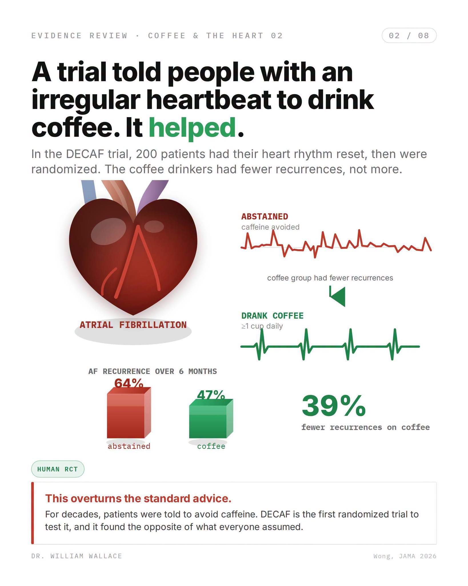
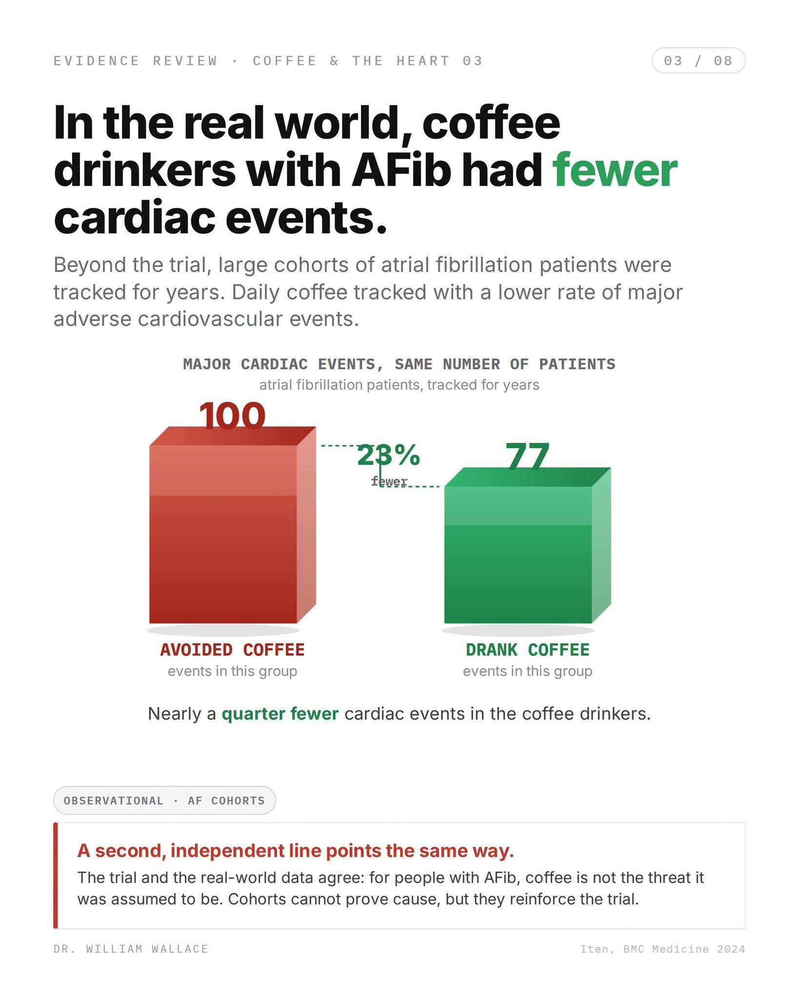
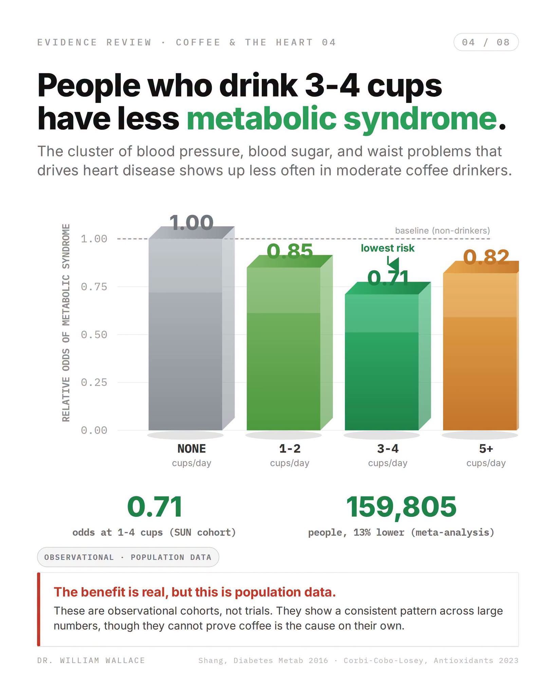
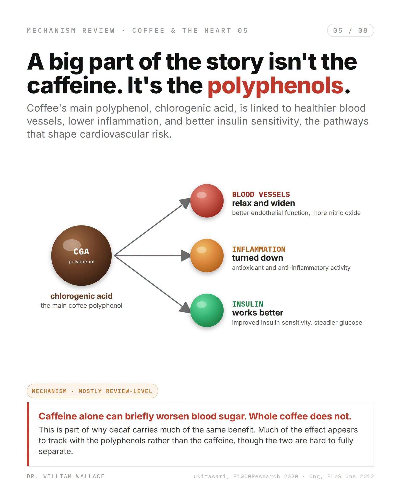

For years the standard advice was to cut back on coffee to protect your heart. Today, the American Heart Association published a scientific statement that lands differently: for most adults, up to about 400 mg of caffeine a day, roughly five cups of coffee, is safe, and moderate intake is linked to a lower risk of heart disease, stroke, heart failure, and even atrial fibrillation.
A randomized trial (DECAF) actually asked people with atrial fibrillation to drink coffee after their rhythm was reset. The coffee group had fewer recurrences, not more. Large real-world cohorts of AFib patients point the same way, with roughly a quarter fewer major cardiac events in daily coffee drinkers.
Coffee drinkers also tend to have less metabolic syndrome, the cluster of blood pressure, blood sugar, and waist issues that drives heart disease. That signal shows up across very large populations, though these are observational and cannot prove cause on their own.
A big part of the story appears to be the polyphenols, not the caffeine. Coffee's main polyphenol, chlorogenic acid, is linked to healthier blood vessels, lower inflammation, and better insulin sensitivity. This is part of why decaf carries much of the same benefit. Most of this mechanistic work (i.e., lab-level)
More is not always better. The benefit is greatest around three to four cups and flattens after that. And it is not for everyone: in people who already have cardiovascular disease, four or more cups a day has been tied to higher risk, pregnancy carries its own cautions, and high-caffeine energy drinks are a different topic altogether.
Coffee is not the heart threat it was once made out to be. For most people, a moderate habit is safe and probably helpful.
Note that this is not medical advice. If you have a heart condition or are pregnant, talk to your clinician about what is right for you.
PMID 42473796
PMID 41206802
PMID 39696255
PMID 26431818
PMID 36978934
PMID 29167102
PMID 22412912
PMID 33708382
PMID 35811963




